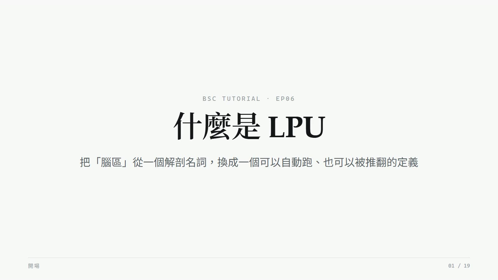
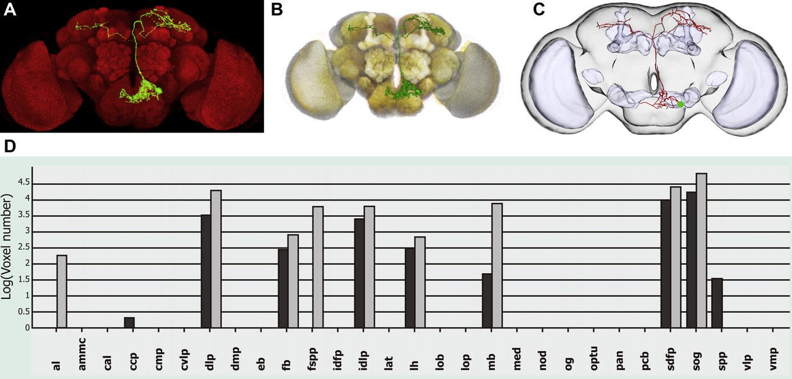
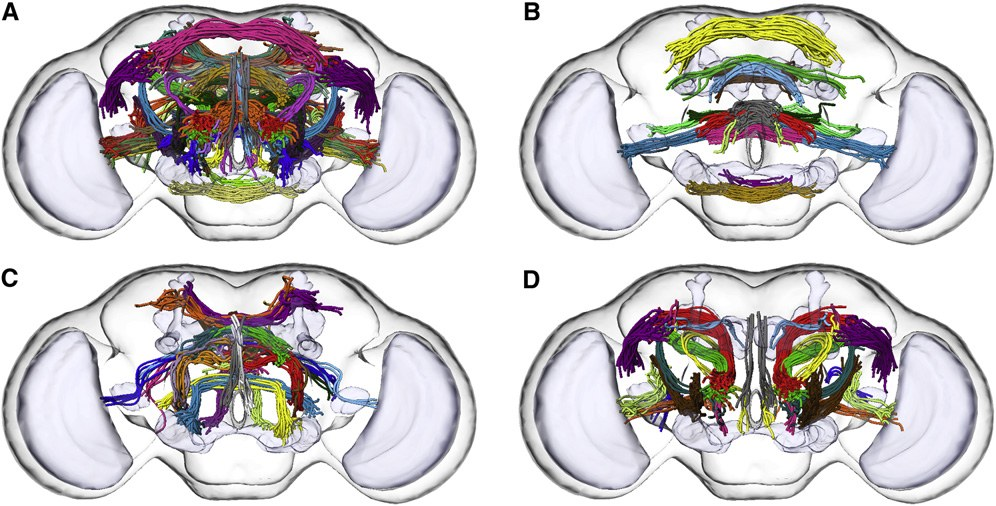

什麼是 LPU
要分析腦，先要決定「腦區」是什麼。這一集只讀一篇論文：2011 年的 FlyCircuit paper， 講它提出的 LPU（local processing unit，區域處理單元）——它怎麼把腦區從一個解剖名詞， 換成一個可以自動跑、可以被推翻的操作型定義；41 這個數字怎麼來的； 以及論文自己說了這個定義鬆在哪裡。

播放教學影片 · 10 分 25 秒 · 在 YouTube 開啟 ↗怎麼讀這一頁
為什麼要問「什麼是 LPU」
EP04 用「FlyCircuit 資料庫」那一頁示範了主題頁怎麼變成一門課。這一集用同樣的做法，但換一個更窄、更硬的題目： 知識庫裡「腦區劃分」主題頁的核心概念——LPU。
為什麼值得專門一集？因為它是這條研究線裡最容易被當成背景知識滑過去的東西。 後面幾篇論文張口就是「49 個節點」「LPU 級模組」，但很少有人回頭問：這 41 個單位是怎麼定出來的？換一套判準會不會變？ 而這正是讀任何一篇用「腦區」當單位的論文時，最該先確認的一件事——因為分區的方式會決定你看見什麼結構。
這一集只讀一篇論文：Chiang et al., Current Biology 2011。
素材是知識庫裡對應的條目 2011-Chiang-FlyCircuit，以及主題頁 brain-region-parcellation 中出自這篇論文的段落。
後續論文怎麼引用、怎麼修正 LPU，留給別集——這一集要做的是把一篇論文的一個概念讀到底。
頁尾有一張對照表說明每一課從哪裡來。
要分析腦，先要決定「腦區」是什麼。這一頁講這條研究線怎麼定義腦區、為什麼不直接沿用解剖學的分法、以及這個定義後來怎麼被自己的資料檢驗。
問題：腦區的邊界誰說了算
傳統上，腦區是靠染色看得見的形態邊界劃分的。果蠅腦有五十幾個神經氈（neuropil）——每一個都是纖維密集的區塊，邊界靠形態就辨認得出來，也有一套沿用多年的命名。2011 年那篇論文的標準腦就切出了 58 個形態上可區分的神經氈。
問題是：形態邊界不一定對應功能單位。兩個相鄰的神經氈可能是同一個處理迴路的兩半；一個大神經氈裡也可能藏著幾個獨立運作的小單位。
如果分析的目的是理解「訊號怎麼在腦裡流動」，用形態當分區標準，等於在問題還沒開始前，就用一個跟問題無關的準則把腦切好了。後面所有的網路分析都建立在這個切法上——節點是它、連結矩陣是它、模組也是它。切錯了，後面全部跟著錯，而且錯得看不出來。
如果分析的目的是理解「訊號怎麼在腦裡流動」，用形態當分區標準，等於在問題還沒開始前就用一個跟問題無關的準則把腦切好了。這條研究線的做法是換一個可以自動化、可以驗證的判準。
兩種神經元：LN 與 PN
換判準之前，先要有可以拿來當判準的東西。2011 年論文用的是一個很簡單的分類：
- LN（local neuron，區域神經元）——整條神經元都待在同一個腦區裡，像市內道路
- PN（projection neuron，投射神經元）——連接兩個以上的腦區，像城際公路
這個分類為什麼做得到？因為前面的工作已經把每顆神經元變成了一個可以計算的東西： 每顆對位到標準腦之後，纖維在 58 個神經氈裡各佔多少 voxel 被記錄下來，壓成一個 58 維的向量。 一顆神經元是 LN 還是 PN，就是看這個向量的分布——集中在一格，還是跨越好幾格。
從這裡開始，「腦區」這件事變成了一個可以在資料上跑的問題，不再需要有人用眼睛看著切片判斷。

- 標準腦切分出 58 個形態上可區分的神經氈 —— 2011 條目〈方法·標準腦生成〉
- 空間分布編碼為 n 維統計分布（n＝神經氈數），是後續所有分群與連結統計的基礎資料結構 —— 2011 條目〈方法·形態量化〉
- 在所有已對位的單一神經元中，約 26% 屬於 LPU-LN —— 2011 條目〈結果·LPU 與 hub〉
LPU 的定義：有沒有自己的在地迴路
有了 LN 和 PN，判準就出來了：如果某個腦區裡有一群自己專屬的 LN 在裡面互相交織，代表這個區域有「在地」的資訊處理，它就是一個獨立的處理單位——LPU。
直覺是這樣：一個地方如果只有高速公路穿過、沒有市內道路，那它是轉運站，不是城市； 有自己的市內道路網，表示這裡的東西進來之後會被「加工」，而不是原封不動送出去。
論文寫下的完整定義有三個條件：
- 具有自身的 LN 族群
- 該族群的纖維完全侷限於此區域
- 至少有一條神經束與之相接（也就是它要跟外界有明確的連線，不是孤島）
反過來，有幾個腦區找不到專屬的 LN——只有大量過境的 PN 末梢，沒有在地處理。論文稱之為 hub（樞紐）。
這個判準的意義在於：它把「腦區」從一個解剖名詞變成一個可操作的定義——給我一批對位好的神經元，跑一遍判準，區塊自己會出來。而且它有可證偽性：如果換一批資料、換個閾值，得到的 LPU 數量會變，那就代表這個數字是「當前解析度下的操作結果」，不是收斂的真值。
怎麼跑出來的：七個步驟
定義講完了，實際怎麼從一萬六千顆神經元裡把 LPU 找出來？論文的方法一節寫成七步：
- 計算 LN 族群通過各 voxel 的次數
- 以五數綜合的上四分位數辨識熱點
- 以群聚分析決定次分區
- 將 LN 納入各次分區
- 由 LN 群集界定各候選 LPU 的邊界
- 計算 c 值以描述 LPU 內 LN 纖維的空間分布
- 驗證該區域是否具有自身的長程神經束
這七步裡有兩個地方值得停一下。
第 2 步的「上四分位數」是一個閾值。換一個數字，熱點的範圍就變，候選 LPU 的邊界跟著變。 論文沒有報告這個閾值的敏感度分析——第 07 課會回來談這件事。
第 7 步是外部驗證。前六步都在 LN 的分布裡打轉，第 7 步跳出來要求「這個區域要有自己的長程神經束」—— 用一個獨立的證據來源（束的走向）確認前六步找到的東西不是統計假象。這一步讓整套判準不只是分群演算法的產物。
還有一個副產品值得單獨講：VLP 被切成了背側和腹側兩個 LPU，是唯一一個單一神經氈內含兩個 LPU 的案例。 切分的依據有三項：兩群 LN 的胞體位置分離、纖維投射彼此分離、各自有與不同夥伴溝通的特徵性長程束。
VLP 被切分為背腹兩個 LPU，證明此判準確實能發現傳統解剖切分所遺漏的次結構。反向而言，缺乏 LN 的 hub 也不再被當作與其他腦區同質的單位，而被識別為性質不同的轉運節點。

41 個 LPU 與四對 hub
判準跑完，全腦得到 41 個 LPU：19 對成對的神經氈，加 3 個位於中央、不成對的（PCB、FB、EB）。 那三個中央的比較特別——它們的 LN 多數發出雙側纖維，所以雖然結構上不成對，功能上仍是一個單位。
另外四對神經氈缺乏分離的 LN 族群，被歸為 hub：
| hub | 推測角色 |
|---|---|
| OPTU（視小葉柄） | 主要的半球間溝通樞紐，含大量連合纖維 |
| Nod（結節） | 資訊關聯樞紐，容納大量同側 PN 末梢 |
| OG（視小球） | 同上 |
| IDLP | 形狀不規則，任一神經元的支配率低於 30%，可能是跨區通路 |
論文對其中兩個 hub 提了一個很誠實的可能性：OG 與 Nod 可能單純是體積太小，容不下額外的 LN。 如果是這樣，「沒有在地處理」就不是這兩個區域的性質，而是尺寸的後果。 這個觀察連著一個沒有答案的問題：形成一個必要的網路模體，最少需要幾顆 LN？
把 LPU 和 hub 疊在一起，幾乎填滿整顆腦——這同時是取樣沒有大片空白的間接證據（與正文 93.03% 的 voxel 覆蓋率互相呼應）。

- 41 個 LPU＝19 對成對神經氈 ＋ 3 個中央不成對（PCB、FB、EB） —— 2011 條目〈結果〉
- 四對 hub：OPTU、Nod、OG、IDLP —— 同上；但摘要寫「6 hubs」，內部不一致
- LPU-LN 佔所有已對位神經元的 26%——換句話說，近四分之三的神經元是跨區的 PN；LPU 是用那 26% 定義出來的
- 空間覆蓋：被至少三顆已對位神經元佔據的 voxel 93.03%，完全未覆蓋 0.79%
有了單位之後：連結矩陣與四個模組
LPU 定出來，網路分析的節點就有了。連結怎麼算？很直接：如果一顆 PN 的纖維同時進入 A 區和 B 區，就算 A 和 B 之間有一條連結。 把所有神經元統計一遍，得到一個「誰連誰、連多密」的矩陣。（注意 LPU-LN 全數被排除——它們定義上不跨區。）
對這個矩陣做階層式分群，浮現出四個密集互連的 LPU 家族，而且與已知功能吻合：聽覺、視覺、運動、嗅覺。
這個結果本身就是一種驗證：研究團隊並沒有事先告訴演算法哪些腦區跟聽覺有關， 這些分群是從連結數字裡自己長出來的，卻和幾十年累積的功能解剖學吻合。 判準是新的，答案卻對得上舊知識——這是新方法最需要的那種證據。
矩陣還透露兩件事：同側腦半球內部的連結密度明顯高於跨越左右的連結（大腦傾向就近處理）； 在感覺模組通往運動模組的路徑上，嗅覺模組比聽覺與視覺模組有更多直接連結。

在 FlyCircuit 裡搜尋，找到約 400 顆連接 AMMC（聽覺區）與約 28 個腦區的神經元。 扣掉左右 AMMC 之間的高密度連結後，約 20% 的 AMMC 投射神經元雙側連往一個叫 CVLP 的區域。 於是有了一個可以拿去做實驗的假說：CVLP 可能是處理 AMMC 資訊的下一站。
這就是有了 LPU 之後多出來的能力：連結圖不直接給答案，但它把「大海撈針」變成「這幾根針值得先測」。
這個定義的邊界
最後一課回到第 03 課那句話：LPU 是一個能被自己的資料推翻的定義。 這不是外人的批評——以下每一條都寫在論文自己的〈討論〉與〈限制〉裡，知識庫的條目逐條記著。
| 鬆動處 | 怎麼回事 | 狀態 |
|---|---|---|
| 判準的閾值 | 第 04 課第 2 步的「上四分位數」與第 6 步的 c 值決定了邊界。41 這個數字對閾值有多敏感，論文沒有量化；作者自承部分 LPU 仍可能被進一步細分——VLP 就是先例 | 未報告敏感度分析 |
| hub 到底幾個 | 摘要載明「six hubs」，正文列出的卻是四對（OPTU、Nod、OG、IDLP）。四對應為八個，與摘要的六不符 | ⚠️ 同一篇論文內部不一致，需回查 Figure 5C 與補充資料 |
| 與 58 個神經氈的對應 | 41 個 LPU 與 58 個解剖神經氈之間的完整對應關係，論文未列表。Figure 5A 的加減號表格裡，部分項目（如 Cal、MB、Lat Tri）以合併形式計為 LPU | 需逐項核對 |
| 骨架化的資訊損失 | 神經元壓縮成 58 維向量後，神經氈內部的分支拓撲、纖維走向、末梢密度分布全部遺失，且不可回溯。LPU 的邊界是在這個已經損失資訊的空間裡畫出來的 | 方法的固有代價 |
| 「連結」是推論不是觀察 | 第 06 課的連結矩陣建立在共域推論上：兩顆神經元的纖維進入同一神經氈，就推定有接觸機會。實際突觸的有無、方向、數量都未知，所得為無向圖 | 光學解析度的天花板 |
LPU 判準的邊界模糊。判準依賴「LN 纖維互相交織」的數學定義與 c 值，但作者自承部分 LPU 仍可能被進一步細分（如 VLP 的先例）。因此 41 這個數字應視為當前解析度下的操作結果，而非收斂的真值。
還有一個 hub 專屬的鬆動處，第 05 課提過：論文自己說 OG 與 Nod 可能單純是體積太小，容不下額外的 LN。 如果是這樣，「hub」這個類別裡就混進了兩種不同的東西——真的不做在地處理的轉運站，和想做但塞不下的小區域。 判準沒有辦法分開它們，因為判準只看「有沒有專屬 LN」，不看「為什麼沒有」。
這一門課學到什麼
七堂課講一個名詞。不是講它多重要，是講它是怎麼被定義出來的、用什麼資料、什麼判準、跑出什麼數字、後來被怎麼檢驗、目前鬆在哪裡。 這六件事，任何一個你要拿來當分析單位的概念都該問一遍。
關於 LPU 的三個反射
- 它是定義，不是發現「41 個 LPU」是一套判準在一批資料上的輸出。換閾值、換資料，數字會變——這是它作為操作型定義的性質，不是瑕疵。
- 知道它在測什麼LPU 測的是「哪裡有在地處理」——用 LN 的分布定義。它沒有在測「哪些神經元屬於同一群」，也沒有在測突觸。用它回答別的問題之前，先回到判準看一眼。
- 近四分之三的神經元不在裡面LPU-LN 只佔 26%。LPU 是用那 26% 畫出來的邊界，而腦裡多數神經元是跨區的 PN——它們穿過這些邊界，不受邊界定義。
思考題
- 第 04 課第 2 步的閾值（上四分位數）如果改成中位數或第九十百分位，41 這個數字大概會往哪個方向變？要設計什麼分析才能回答「LPU 數量對閾值的敏感度」？
- 論文推測 OG 與 Nod「可能只是體積太小容不下額外的 LN」。如果這是真的，「hub」這個分類就混進了兩種不同的東西。你會怎麼把它們分開？
- LPU 是用只佔 26% 的 LN 定義出來的，而近四分之三的神經元是跨區的 PN。如果改用 PN 的連結模式來劃分腦區，你預期得到的分區會跟 41 個 LPU 一致嗎？兩種分法各自在回答什麼問題？
這門課是怎麼從知識庫生出來的
| 課 | 素材來源 | Agent 做了什麼 |
|---|---|---|
| 00 | 主題頁引言 | 改寫成「為什麼專講一個名詞」 |
| 01 | 主題頁〈問題：腦區的邊界誰說了算〉 | 加「切錯了後面全跟著錯」的推論 |
| 02 | 2011 條目〈科普文·從神經元到區塊〉＋〈方法·形態量化〉 | 把 LN／PN 接上 58 維向量的資料結構；補條目〈解讀〉的警告 |
| 03 | 主題頁〈LPU：用有沒有在地迴路來分〉＋條目〈方法·操作型定義〉 | 三個條件列出來；加市內道路的比喻 |
| 04 | 條目〈方法〉七步 ＋〈討論〉VLP 案例 | 指出第 2 步是閾值、第 7 步是外部驗證；VLP 單獨拉出來講 |
| 05 | 條目〈結果·LPU 與 hub〉 | hub 表格；26% 的伏筆留給第 07 課 |
| 06 | 條目〈結果·全腦連結圖〉＋ AMMC 應用案例 | 強調「演算法事前不知道功能標籤」這個驗證邏輯 |
| 07 | 條目〈問題與限制〉＋〈疑點與待追〉 | 整理成表；全部出自論文自己的自承 |
| 思考題 | 條目〈疑點與待追〉 | 挑三條改寫成問題 |
跟 EP04 一樣的分工：Agent 攤開結構、連回出處、改寫口吻；人決定教什麼、多深、哪句是重點。 這一集人決定了三件事：把題目縮到單一概念、只讀 2011 那一篇、把「操作型定義」當成整集的主軸。
圖片來源 本頁四張圖全部取自 Chiang et al. 2011（知識庫條目 2011-Chiang-FlyCircuit 所擷取），各標原圖編號；
版權屬原出版社與作者（Current Biology／Elsevier），此處為教學引用。
檢驗一下
十題單選，考的是 LPU 這個定義——判準是什麼、數字怎麼來、被怎麼檢驗、邊界在哪。答完每一題立刻告訴你對錯與理由。